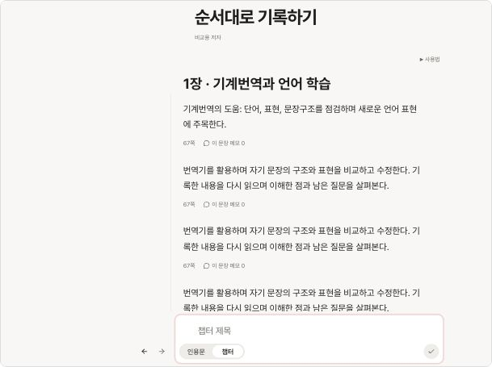

화살표는 입력 박스 바깥 왼쪽, 제목은 ‘메모’
챕터 모드에서만 ← 상위 / → 하위를 표시합니다. 화살표는 박스 바깥 왼쪽에서 하단 인용문·챕터 선택 버튼과 같은 높이에 놓습니다. 배경 없는 Pill 클릭 영역과 단계에 따른 입력창 폭 변화는 유지합니다. ‘메모’ 문구는 패널 제목과 열기 버튼에 적용했습니다.
이번 두 수정은 실제 공통 컴포넌트에 적용했습니다. 아래는 실제 ArchiveScreen·CitationEditor를 사용하는 로컬 예제입니다. 저장한 항목은 예제 안에만 남습니다. 세 열 읽기 작업대의 배치는 별도 선택 단계로 유지합니다.
1024 × 768에서 직접 확인
창이 좁으면 전체 화면을 축소 표시합니다. 단계 화살표를 눌러 입력창이 움직이는 모습과 인용문·챕터 전환을 확인할 수 있습니다.
추가 정렬 확인: 1024px에서 인용문·챕터 선택 버튼과 두 화살표의 세로 중심이 모두 735px로 일치합니다. 최상위와 하위 모두 확인했습니다.
결정과 검증
| 사용자 결정 | 화살표를 입력 박스 바깥 왼쪽에 배치. 화면 제목과 열기 버튼은 ‘메모’. |
|---|---|
| Codex 판단 | 바깥 공간을 사용해 입력창·인용문의 기존 시작선과 폭을 보존. 왼쪽 여백이 부족한 좁은 화면에서는 화살표만 박스 바깥 윗줄로 넘겨 잘림을 방지. |
| 유지한 기능 | 챕터에서만 화살표 표시, 현재 챕터 단계 +1까지 이동, 200ms 폭 전환과 움직임 줄이기 설정, 초안·커서·저장 잠금. 책별 메모·자동 저장·접기·펼치기. |
| 검증 | 자동 테스트 3개 파일·21개 통과. 타입 검사·제품 빌드 통과. 실제 컴포넌트의 1024px Day/Night에서 외부 화살표·커서 보존·저장 후 정렬 확인. 최상위 글자 폭 500px, 하위 468px로 입력·저장 문장이 일치. 375px에서는 화살표만 윗줄로 이동하고 가로 잘림 없음. |
| 남은 범위 | 세 열 읽기 배치는 아직 시안입니다. 이번 변경은 로컬에 적용했으며 커밋·푸시는 진행하지 않았습니다. |
검토 범위는 이번 UI·문구 수정입니다. 승인된 200ms 실제 폭 애니메이션에 대한 기존 디자인 검사 예외의 설명을 갱신했습니다. 새로운 전역 무시 규칙은 추가하지 않았습니다. 프레임 성능과 운영 서버 저장은 이번에 측정하지 않았습니다. 로컬 서버와 검토 화면은 이어서 사용할 수 있도록 유지합니다.
1024px 확인 화면
